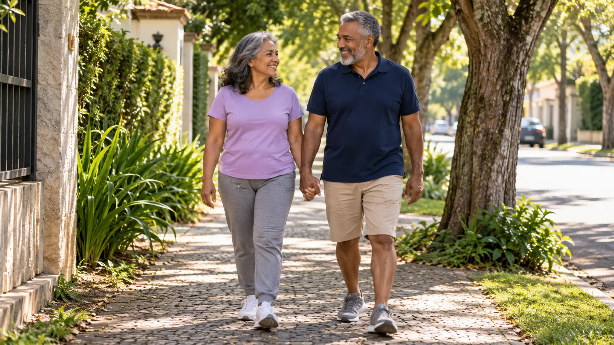
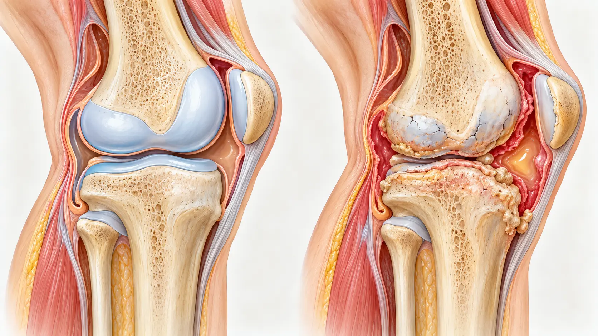
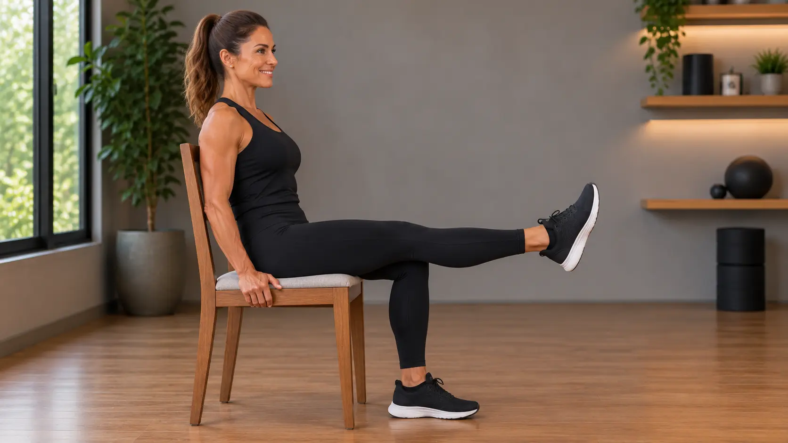
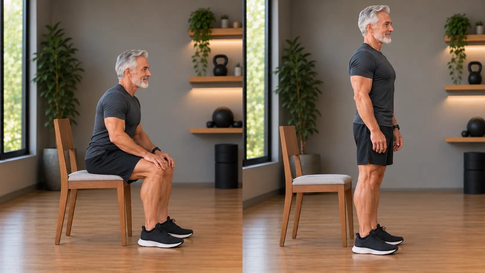
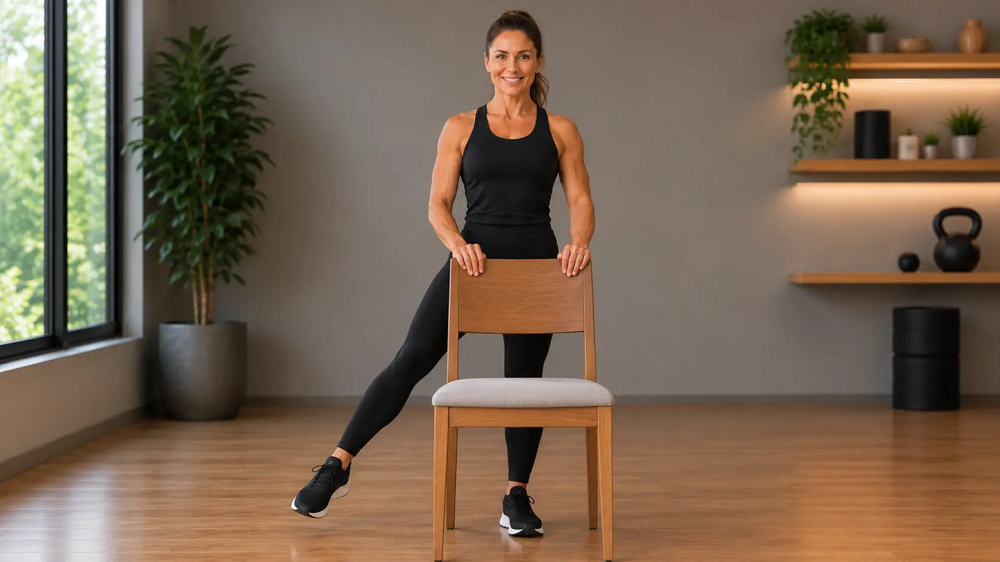
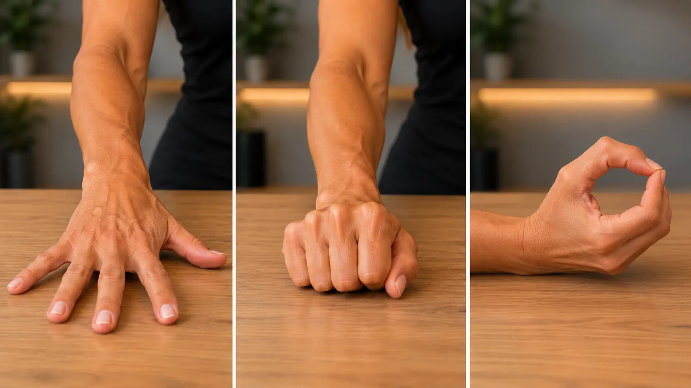

Dor nas articulações depois dos 50: o que é normal, o que merece atenção e o que realmente ajuda
O joelho que reclama na escada, a mão que amanhece dura, o quadril que pesa no fim do dia. Entenda o que acontece com as articulações depois dos 50, quais sinais pedem avaliação médica, o que a ciência confirma que ajuda e o que é só promessa.

Levantar da cama e sentir o corpo “enferrujado” nos primeiros minutos. Ouvir um estalo no joelho ao agachar. Sentir a mão mais dura para abrir um pote. Depois dos 50, essas queixas ficam tão comuns que muita gente acha que é só “coisa da idade” e que não há o que fazer.
Não é bem assim. Boa parte desses incômodos tem nome, tem explicação e, principalmente, tem caminhos que funcionam, a maioria ao alcance de qualquer pessoa.
O que acontece com as articulações com o tempo
As articulações são os pontos onde um osso encontra o outro: joelho, quadril, ombro, dedos. Nas pontas desses ossos existe a cartilagem, uma camada lisa que funciona como um amortecedor e deixa o movimento deslizar sem atrito.
Com os anos, o uso, o excesso de peso, lesões antigas e a própria genética, essa cartilagem pode ir se desgastando. É a artrose (também chamada de osteoartrite), a causa mais comum de dor nas articulações depois dos 50. Ela costuma aparecer nos joelhos, no quadril, nas mãos e na coluna.

Uma confusão comum: artrose e artrite não são a mesma coisa. A artrose tem a ver com desgaste. A artrite é uma inflamação, que pode ter outras causas, como a artrite reumatoide e a gota, e precisa de tratamento específico com o médico.
Artrose não é sentença de imobilidade. Para a maioria das pessoas, é uma condição que se controla, e o movimento é parte do tratamento.
Mulheres, homens e as articulações
A artrose é mais comum nas mulheres: cerca de 6 em cada 10 casos no mundo. A queda do estrogênio na menopausa, a anatomia do quadril e do joelho e a menor massa muscular ajudam a explicar essa diferença, que fica mais evidente depois dos 50, principalmente nas mãos e nos joelhos.
Nos homens, a artrose aparece mais ligada a lesões antigas, esporte e trabalho pesado. E uma outra causa de dor articular, a gota, provocada pelo excesso de ácido úrico, é bem mais frequente neles.
Os sinais mais comuns
- Rigidez ao acordar ou depois de ficar parado, que melhora com poucos minutos de movimento (na artrose, costuma durar menos de meia hora).
- Dor que piora com o esforço e melhora com o descanso: subir escada, caminhar muito, carregar peso.
- Estalos ou sensação de “areia” ao dobrar o joelho.
- Inchaço leve depois de um dia de mais esforço.
- Nas mãos: dedos mais grossos nas juntas e dificuldade para abrir potes ou girar chaves.
Quando procurar o médico
Alguns sinais não combinam com o desgaste comum e merecem avaliação logo:
- articulação vermelha, quente e muito inchada, principalmente se vier com febre;
- rigidez pela manhã que dura mais de meia hora a uma hora;
- dor forte que acorda você à noite;
- várias articulações doendo ao mesmo tempo, dos dois lados do corpo;
- joelho que trava ou falseia;
- dor que começou depois de uma queda ou pancada.
Importante: este conteúdo é educativo e não substitui a avaliação de um profissional de saúde. Só o médico pode confirmar o diagnóstico e indicar o tratamento adequado para o seu caso.
O que a ciência confirma que ajuda
Exercício: a recomendação mais forte de todas. A diretriz de 2026 do Colégio Americano de Reumatologia recomenda fortemente o exercício para quem tem artrose de joelho e quadril. Não existe um tipo único “certo”: caminhada, hidroginástica, musculação leve, bicicleta. O que importa é se mexer com regularidade. Músculos fortes ao redor da articulação tiram parte da carga que cairia sobre a cartilagem.
Perder peso, quando há sobrepeso. Também é recomendação forte. Cada quilo a menos alivia a pressão sobre joelhos e quadril a cada passo.
Outras ajudas com recomendação favorável: tai chi, ioga para o joelho, massagem, acupuntura, compressas quentes ou frias, bengala quando a caminhada está difícil e joelheiras específicas, sempre com orientação.
Remédios e infiltrações também fazem parte do tratamento, mas só com indicação médica, porque dependem da sua saúde geral e dos remédios que você já usa.
Exercícios simples para começar
Faça os movimentos devagar, sem dor forte. Um leve desconforto é aceitável; dor aguda é sinal para parar. Comece com 1 a 2 séries de 8 a 10 repetições.
Como respirar em todos os exercícios: solte o ar pela boca durante o esforço e inspire pelo nariz ao voltar à posição inicial. Nunca prenda a respiração.
1. Extensão de joelho sentado

Sente-se numa cadeira firme, com as costas apoiadas. Estique uma perna até ficar reta, segure por 3 segundos e desça devagar. Troque de perna.
Fortalece a musculatura da frente da coxa, que protege o joelho.
2. Sentar e levantar da cadeira

Sente-se na beirada da cadeira, com os pés apoiados no chão. Incline o corpo levemente para frente e levante-se, usando as pernas. Volte a sentar devagar, controlando a descida. No começo, pode apoiar as mãos nas coxas ou nos joelhos.
É um treino para pernas e quadril que vira autonomia no dia a dia.
3. Abertura lateral da perna em pé

Fique em pé, atrás de uma cadeira, segurando no encosto. Afaste uma perna para o lado, com o pé reto para frente e o tronco parado, e volte devagar. Troque de perna.
Fortalece a lateral do quadril e ajuda no equilíbrio.
4. Exercícios para as mãos

Abra bem a mão, espalhando os dedos, e depois feche devagar, sem apertar com força. Em seguida, com a mão de lado, encoste a ponta do polegar na ponta de cada dedo, um de cada vez, formando um círculo.
Pode ser feito com as mãos mornas, depois do banho, quando a rigidez costuma ser menor.
Suplementos: promessa x realidade
Prateleiras de farmácia e anúncios na internet prometem muito para as articulações. Veja o que cada promessa diz e o que os estudos realmente mostram.
Glucosamina e condroitina
“Regeneram a cartilagem.”
A diretriz de 2026 recomenda fortemente contra o uso, para joelho, quadril e mãos. Os estudos não mostraram efeito relevante sobre a dor.
Colágeno
“Repõe a cartilagem que se perdeu.”
O colágeno é digerido como qualquer proteína e não “vira” cartilagem. Há estudos pequenos com o colágeno tipo II não desnaturado sugerindo alívio da dor, mas os próprios pesquisadores pedem estudos maiores e mais longos. A diretriz não o recomenda.
Cúrcuma (curcumina)
“Anti-inflamatório natural que substitui remédio.”
Revisões de estudos mostram alívio da dor e da rigidez, mas os estudos são curtos e usam produtos diferentes. Pode ajudar como complemento, não como substituto.
Cuidado: pode interagir com remédios que “afinam o sangue”.
Ômega-3 (óleo de peixe)
“Lubrifica as articulações.”
A diretriz de 2026 recomenda contra o uso para artrose.
Vitamina D
“Protege as articulações.”
Para a artrose, a diretriz recomenda contra. Se houver deficiência, quem trata é o médico, por outros motivos de saúde.
Uso racional: se você quiser experimentar algum suplemento, converse antes com o médico, principalmente se já usar remédios para pressão, diabetes ou para “afinar o sangue”. Defina com ele um prazo para avaliar se fez diferença. Se não fizer, não vale continuar gastando.
O que está em estudo e o que ainda não chegou ao Brasil
Remédios para obesidade e dor no joelho. Em 2024, um grande estudo publicado no New England Journal of Medicine mostrou que a semaglutida, em pessoas com obesidade e artrose de joelho, levou a perda de peso importante e a menos dor. Com base nisso, a diretriz americana de 2026 passou a recomendar, de forma condicional, esse tipo de remédio para quem tem artrose de joelho e obesidade, sempre junto com alimentação e exercício. No Brasil, ele é aprovado pela Anvisa para obesidade e só pode ser usado com receita e acompanhamento médico.
Uma injeção que tenta proteger a cartilagem. O lorecivivint é uma injeção aplicada no joelho uma ou duas vezes por ano, criada para tentar frear o desgaste da cartilagem. Em 2026, ele está em análise nos Estados Unidos, na Europa e no Reino Unido, mas ainda não foi aprovado em nenhum país, inclusive no Brasil. Ou seja: hoje não é tratamento disponível, e qualquer oferta de compra deve ser vista com desconfiança.
Plasma rico em plaquetas (PRP) e células-tronco. São oferecidos em algumas clínicas como solução para o joelho, mas a diretriz de 2026 recomenda fortemente contra o uso desses tratamentos na artrose de joelho e quadril, por falta de comprovação.
Novidades merecem atenção, mas não pressa. Remédio sem registro na Anvisa não tem garantia de qualidade nem de segurança no Brasil. O caminho seguro é sempre conversar com o médico.
Para levar com você
A dor nas articulações depois dos 50 é comum, mas não precisa comandar a sua rotina. O que mais funciona não é caro nem complicado: movimento todos os dias, músculos fortes, peso sob controle e acompanhamento médico quando os sinais pedirem.
Articulação que se movimenta é articulação que se cuida.
Fontes e leituras científicas
- American College of Rheumatology — 2026 Update of the Recommendations for the Management of Osteoarthritis of the Knee, Hip, and Hand (setembro de 2026).
- GBD 2021 Osteoarthritis Collaborators — Global, regional, and national burden of osteoarthritis, 1990–2020, and projections to 2050. The Lancet Rheumatology, 2023.
- Bliddal H. et al. — Once-Weekly Semaglutide in Persons with Obesity and Knee Osteoarthritis (estudo STEP 9). New England Journal of Medicine, 2024.
- Wandel S. et al. — Effects of glucosamine, chondroitin, or placebo in patients with osteoarthritis of hip or knee: network meta-analysis. BMJ, 2010.
- Revisão “umbrella” de meta-análises sobre curcumina na osteoartrite. Phytotherapy Research, 2024.
- Gupta A., Maffulli N. — Undenatured type II collagen for knee osteoarthritis. Annals of Medicine, 2025.
- Biosplice Therapeutics — comunicados sobre a análise do lorecivivint na Europa e no Reino Unido (2026).